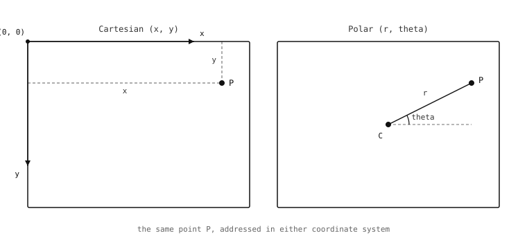

5.2. Koordinater och regioner¶
Bildbehandling verkar på pixlar, och för att verka på en pixel måste en algoritm adressera den via koordinat. För att verka på en rektangel av dem gäller samma sak – rektangeln måste beskrivas på ett sätt som algoritmen och applikationskoden är överens om. Konventionen som image-modulen använder för koordinater och rektanglar är okomplicerad, med en detalj som överraskar läsare som är vana vid matematisk konvention snarare än konventionen från datorgrafik, och det är värt att vara tydlig med från början.
5.2.1. Pixelrutnätet¶
Pixeln (0, 0) är det övre vänstra hörnet av en bild. X-axeln löper åt höger, så större x betyder längre åt höger. Y-axeln löper nedåt, så större y betyder längre ned i bilden. En bild med bredd gånger höjd innehåller pixlar vid heltalskoordinater från (0, 0) till (width - 1, height - 1); det finns ingen pixel vid (width, 0) eller (0, height) – de positionerna är de högra och nedre kanterna, ett steg bortom den sista faktiska pixeln i respektive riktning.
Den nedåtriktade y-axeln är detaljen som nämndes ovan. En läsare som är van vid rutpappersgeometri förväntar sig att större y betyder högre upp; här är den intuitionen exakt omvänd. Anledningen till omkastningen är att digitala sensorer och digitala skärmar båda arbetar från det övre vänstra hörnet och går åt höger genom varje rad, uppifrån och ned, och att lägga ut pixlarna i minnet i samma ordning gör relationen mellan ”position i i bufferten” och ”rad r, kolumn c i bilden” till så enkel aritmetik som det går – positionen i för pixeln (x, y) är helt enkelt y * width + x. Varje bildbibliotek enades om det arrangemanget för decennier sedan av samma anledning, och kostnaden är en liten mental justering första gången man arbetar med bilder.

Bildens koordinatsystem: origo i det övre vänstra hörnet, x löper åt höger, y löper nedåt. En rektangulär region inuti bilden namnges av sitt övre vänstra hörn (x, y) och sina dimensioner (w, h).¶
5.2.2. Rektanglar¶
De flesta operationer på en bild bryr sig mindre om en enskild pixel än om en rektangel av pixlar – ett område att titta i, en region att kopiera ut, en ruta inom en ruta att beräkna statistik över. Formen för att namnge en rektangel väljer den enklast möjliga utökningen av enkelpixelkonventionen: ange det övre vänstra hörnets koordinat, följt av rektangelns dimensioner, packade i en fyrtupel (x, y, w, h). Pixlarna inuti rektangeln finns vid kolumnerna x till x + w - 1 och raderna y till y + h - 1.
Detaljen som är värd att vara tydlig med här är att w och h är storlekar, inte koordinater för det nedre högra hörnet. Rektangeln (10, 20, 4, 3) täcker kolumnerna 10, 11, 12, 13 och raderna 20, 21, 22 – tolv pixlar totalt – inte en region som löper från (10, 20) till (4, 3). Konventionen är enhetlig genom hela modulen, så när den väl är internaliserad upphör misstagen, men den fångar folk första gången.
Formen (x, y, w, h) dyker upp på tre ställen som ser olika ut men delar konventionen. Det första är när en bild beskriver sitt eget avtryck: rektangeln som täcker hela bilden är (0, 0, width, height). Det andra är när en detekteringsmetod returnerar ett resultat med en begränsningsruta – en blob, en rect, en apriltag – och rutan rapporteras tillbaka som (x, y, w, h). Det tredje är när en metod måste instrueras att arbeta på en delregion av bilden snarare än hela bildrutan; nyckelordsargumentet roi som avgränsar operationen tar samma fyrtupel.
Att plocka upp en begränsningsruta från en metod och lämna in den i nästa metods roi är ett av de vanligaste mönstren inom bildbehandling. Begränsningsrutan från en grov första detektering smalnar av sökområdet för en finare andra, och det enhetliga vokabuläret över detekteringsresultat och metodargument är vad som gör det mönstret så okomplicerat som det är – en tupelform, använd på samma sätt på båda sidor av överlämningen.
5.2.3. Heltalsadresser, fraktionella tyngdpunkter¶
Pixeladresserna själva är heltal. En pixel antingen finns eller finns inte vid en given heltalskolumn och rad, och att fråga vad som finns vid koordinaten (40.5, 30.7) är inte en välformulerad fråga – det finns ingen pixel som sitter exakt på den positionen. En handfull storheter som image-modulen härleder från pixelpositioner är dock fraktionella, och det är värt att förstå varför så att distinktionen inte överraskar applikationen senare.
Det vanligaste fallet är tyngdpunkten – en regions masscentrum. För en sammanhängande region av pixlar är tyngdpunkten i flyttalsform medelvärdet av medlemspixlarnas positioner, viktat efter deras täthet. En region vars pixlar sträcker sig över två kolumner kommer att ha en tyngdpunkts-x på, säg, 41,6 – en verklig position som ögat skulle beskriva som ”mitten av den regionen” trots att ingen faktisk pixel sitter exakt vid det x. Detekteringsresultatobjekt bär båda formerna som skrivskyddade egenskaper: ett heltalspar (cx / cy, användbart när positionen matas tillbaka till något som vill ha heltalspixelkoordinater) och ett flyttalspar (cxf / cyf, användbart när positionen går in i en styrslinga som drar nytta av subpixelupplösning).
Det andra fallet är förskjutning mellan två bildrutor mätt i frekvensdomänen. Tekniker som analyserar en bilds spektrala innehåll snarare än dess pixlar direkt kan upplösa skiften finare än en pixel, och de rapporterar dessa skiften som flyttalsvärden (dx, dy).
Tumregeln: pixeladresser är heltal; positioner och skiften som kommer ut ur en algoritm kan vara flyttal. Ritmetoder accepterar båda formerna och avrundar flyttal nedåt till närmaste heltalspixel när resultatet måste landa på rutnätet.
5.2.4. Kartesiska och polära¶
Systemet som beskrivits hittills är kartesiskt: varje pixel namnges av sin horisontella och vertikala förskjutning från origo. Det är systemet som byten lagras i – pixeln i i bufferten motsvarar pixeln vid kolumnen i % width och raden i // width, genom att gå raderna uppifrån – och det är systemet som varje metod arbetar i som standard.
En andra representation är värd att känna till eftersom vissa algoritmer fungerar mycket bättre i den. Polära koordinater namnger varje pixel via dess avstånd från en vald centrumpunkt och vinkeln mellan den och en referensriktning. Bildens pixlar har inte flyttats – byten ligger fortfarande i samma radmajoritetsbuffert – men adresseringsschemat har bytt från ”hur långt åt höger och hur långt ned” till ”hur långt från centrum och i vilken vinkel runt det.”

Samma punkt P, namngiven på två sätt: kartesiskt (x, y) från origo i övre vänstra hörnet, polärt (r, theta) från ett valt centrum.¶
Varför bry sig om att byta? På grund av två identiteter som förvandlar svåra sökningar till enkla.
I polära koordinater är att rotera bilden kring det valda centrumet samma operation som att translatera dess pixlar längs vinkelaxeln – x-riktningen i den omprojicerade bilden. En roterad kopia är originalet förskjutet åt vänster eller höger i polär form.
I log-polära varianten – avståndsaxeln använder en logaritmisk skala, vinkelaxeln förblir linjär – är att skala bilden kring det valda centrumet samma operation som att translatera dess pixlar längs avståndsaxeln – y-riktningen. En skalad kopia är originalet förskjutet uppåt eller nedåt i log-polär form.
Så en algoritm som måste känna igen ett känt mönster under rotation eller skalning kan göra sin sökning i polärt rum, där båda transformationerna förvandlas till vanliga translationer. Translationer är mycket billigare att söka efter än rotationer och skalningar, och den polära omprojiceringen är vad som gör substitutionen tillgänglig.
Polära koordinater ersätter inte kartesiska för att lagra pixlar; byten lever alltid på det kartesiska rutnätet. Modulen tillhandahåller ett par metoder som omprojicerar en bild från kartesisk till polär form på begäran, algoritmen som behöver polära koordinater gör sitt arbete, och antingen projiceras resultatet ut igen eller så används mätningen i polärt rum direkt. Den mekanismen är den enda anledningen till att polära koordinater över huvud taget förekommer i modulens yta.
Med kartesiska koordinater för att namnge enskilda pixlar, fyrtupeln (x, y, w, h) för att namnge rektanglar av dem, och polära koordinater tillgängliga när en algoritm drar nytta av dem, har en applikation ett komplett vokabulär för att namnge var i en bild något befinner sig. Vad som faktiskt lagras vid någon av dessa positioner är nästa lager av grunden.